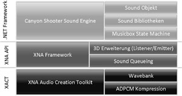
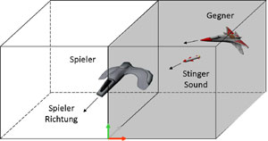
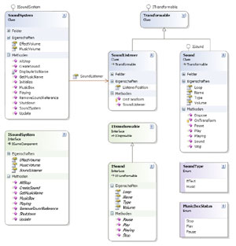

| Computer Graphics TU Braunschweig |
|  |
| (a) Sound Architektur |
|  |
| (b) 3D Sound in XNA |
|  |
| (c) Sound Klassen UML-Diagramm |
Das Soundsystem ist eine zentrale Komponente der Anwendung, da es in allen Bereichen des Spiels benötigt wird. Deshalb benötigt das System ganz unterschiedliche Funktionalitäten, die in der folgenden Liste aufgeführt sind.
Die Architektur des Soundsystems wurde mehrschichtig aufgebaut, um alle Funktionalitäten sauber getrennt voneinander zu implementieren. Zudem war es dadurch möglich Komponenten aus dem bestehenden XNA - beziehungsweise .NET-Framework - wieder zu verwenden. Abbildung (a) veranschaulicht den schematischen Aufbau des Systems.
Interessant an dieser Stelle ist das Microsoft XNA Audio Creation Toolkit (XACT), das die Erstellung der "Wavebank" ermöglicht. Eine "Wavebank" beinhaltet alle Sounds, die im Spiel benötigt werden. Sie wird über die Sound-Bibliothek der Anwendung zur Verfügung gestellt. Ein Vorteil von XACT ist die Kompression der Sounds. Hierdurch konnte der Speicherplatz für die Sounds um 75% reduziert werden.
Ein weiteres Leistungsmerkmal des XNA Frameworks ist die 3D-Erweiterung für Effekte. Hierbei wird dem Zuhörer - in diesem Fall der Spieler - ein räumlicher Eindruck über die Soundwiedergabe vermittelt. Hierfür wird der Vektorraum des Spielers in zwei Teilvektorräume zerlegt. Durch die vom XNA Framework bereitgestellte Methode "Apply3D" wird die Abbildung der Sounds auf das Stereobild der Kopfhörer durchgeführt. Als Parameter benötigt diese Methode den Träger des Sounds und den Zuhörer.
Abbildung (b) verdeutlicht die räumliche Aufteilung durch die 3D-Erweiterung. Hierbei wird der Stinger Sound auf den linken Lautsprecher des Spielers projeziert.
Aufgrund der 3D-Erweiterung war es notwendig, dass der Sound als Objekt repräsentiert wird, das transformierbar sein muss. Diese Vorgabe war mit dem Konzept des Soundsystems sogut vereinbar, dass die 3D-Erweiterung reibungslos implementiert werden konnte. Das Klassendiagramm - Abbildung (c) - verdeutlicht die Struktur des Soundsystems.
Dieses Diagram wurde mit der Entwicklungsumgebung Microsoft Visual Studio erstellt und entspricht nicht der Standard UML Darstellung. Es zeigt jedoch die wesentlichen Abhängigkeiten innerhalb des Soundsystems und ermöglicht die Code-Generierung aus dem Diagramm.
TU Braunschweig
- Fakultät für Mathematik und Informatik
- Computer Graphics - Teamprojekt Canyonshooter
{kind=link}
{kind=link}
{kind=link}